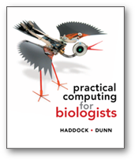
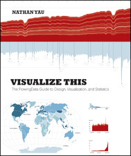
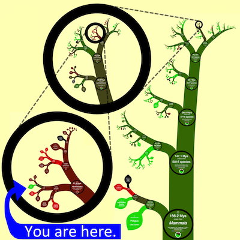
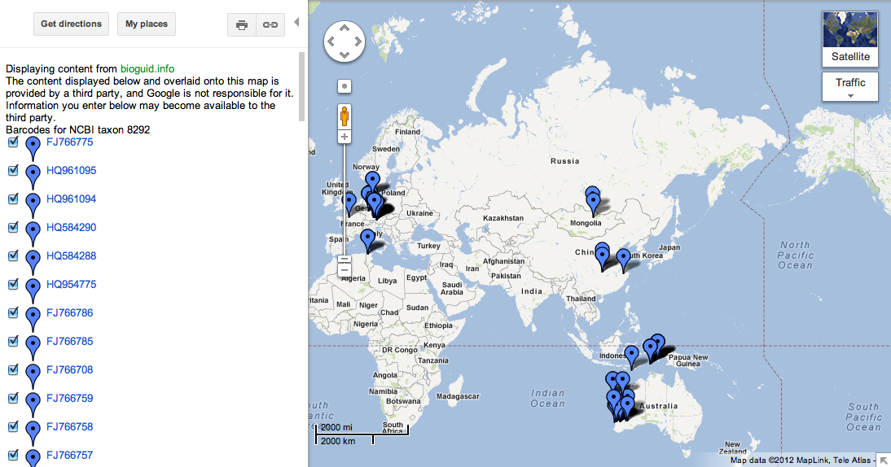

| iPhylo |
|  | Practical Computing for Biologists |
| Facts are Sacred: The power of data (Guardian Shorts) [Kindle and iBooks] | |
|  | Visualize This: The Flowing Data Guide to Design, Visualization, and Statistics [Kindle and iBooks] |
The sequence used in the lecture is DQ176312. Since I made the original slides GenBank has updated the sequence to include the proper name of the ant. You can see the original version of the sequence taxon name using the history tool, see http://www.ncbi.nlm.nih.gov/nucleotide/DQ176312.1?report=girevhist.
iSpecies is at http://ispecies.org.
iSpecies is currently offline.
No, it's back, e.g. http://ispecies.org/?q=StauroisThis is a video of a geophylogeny on Google Earth.
The description of Microgale jenkinsae is available in BioStor
Touch screen displaying a large classification.
(for more examples see Touching the tree of life and OneZoom.

One basic challenge is to find out what we know about an organism. Pick an organism and find out the following:
Possible organisms (or try your own favourites):
The previous exercise required you to search various web sites and assemble the information by hand. In order to automate this we need to a way to extract data, rather than web pages.
Most web pages are designed to be viewed by people, for example http://en.wikipedia.org/wiki/Mantidactylus.
RSS feeds are availalble for many sites. Originally a simple way to provide a "live update" of content such as the top ten current news stories, RSS feeds can contain additional information, such as geolocation and embedded images.
Here is an example RSS feed http://api.flickr.com/services/feeds/geo/?g=806927@N20&lang=en-us&format=rss_200, which is an XML document. Remember that this is intended to be read by a computer, not by people. Most web browsers can convert RSS feeds into something readable. Tools such as Google Maps understand RSS feeds, enabling you to create instant maps.
Google has recently updated Maps, and by default you can no longer simply paste in a URL. You need to tell Maps that you want to use the "classic" interface. To do this, click on the "?" symbol near the bottom of the browser window and click in Return to classic Google Maps.
The site http://iphylo.org/~rpage/phyloinformatics/rss/ provides several RSS feeds for biological data, such as DNA barcode sequences. For example, if you copy the RSS feed URL below and paste it into Google Maps, you should see a map of recent DNA barcodes for amphibians.
If this site doesn't work, try the version using Leaflet
The photo site Flickr produces GeoRSS feeds. For example the EOL Flickr group contains lots of images that are geotagged. To see these on a map, copy the RSS feed URL below and paste it into Google Maps.
iSpecies is an example of a mashup, whereby different sources of data are assembled in one place. This web site is showing its age, so we will look at making a new one. As a starting point, mashup enables you to search four different data sources for information about a taxon.
Some ideas: